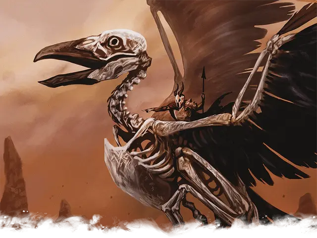

Костяной рух
Bone Roc
Огромная Нежить, обычно нейтрально-злая

Класс Доспеха 15
Хиты 133 (14к12 + 42)
Скорость 15 футов, летая 90 футов
| мод | спас | ||
|---|---|---|---|
| СИЛ | 18 | +4 | +4 |
| ЛОВ | 20 | +5 | +8 |
| ТЕЛ | 16 | +3 | +3 |
| мод | спас | ||
|---|---|---|---|
| ИНТ | 2 | −4 | −4 |
| МДР | 17 | +3 | +6 |
| ХАР | 10 | +0 | +0 |
Навыки Восприятие +6
Уязвимость к урону дробящий
Иммунитет к урону яд
Иммунитет к состояниям истощение, отравление
Чувства тёмное зрение 120 футов
Опасность 8 (3900 опыта)
Бонус мастерства +3
Действия
Мультиатака. Костяной рух совершает атаку Клювом и две атаки Когтями.
Клюв. Рукопашная атака оружием: +8 к попаданию, досягаемость 5 футов, одна цель. Попадание: 14 (2к8 + 5) колющего урона.
Когти. Рукопашная атака оружием: +8 к попаданию, досягаемость 5 футов, одна цель. Попадание: 12 (2к6 + 5) рубящего урона плюс 10 (3к6) урона некротической энергией.
Описание
Костяной рух — это птицеподобная нежить, которая может состоять из костей множества летающих существ. Несмотря на свое название, они не всегда являются оживленными скелетами рух. Вы можете изменить костяного рух, сверившись с таблицей «Источники костей рух», чтобы определить тип используемых костей и то, как это влияет на его блок статистики.
| к6 | Источник костей |
| 1 | Топороклюв. Скорость ходьбы костяного рух равна 50 футам. |
| 2 | Куролиск. Существо, по которому попала атака Клювом костяного рух, должно преуспеть в спасброске Телосложения Сл 14, иначе его скорость снижается на 10 футов до начала следующего хода костяного рух. |
| 3 | Гигантская сова. Значение модификатора к проверкам Ловкости (Скрытность) костяного рух становится +8. |
| 4 | Перитон. Костяной рух обладает сопротивлением к рубящему урону от немагических атак. |
| 5 | Птеранодон. Костяной рух не провоцирует атаки, когда вылетает из досягаемости врага. |
| 6 | Рух. Размер костяного рух становится Громадным, а скорость полёта равна 120 футам. Его кости хитов остаются без изменения. |